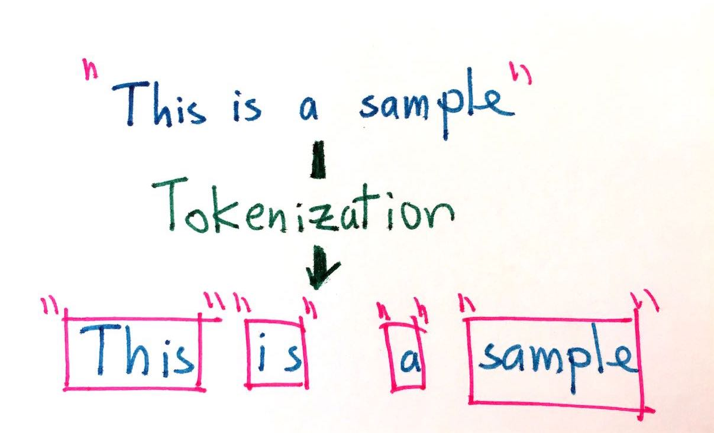
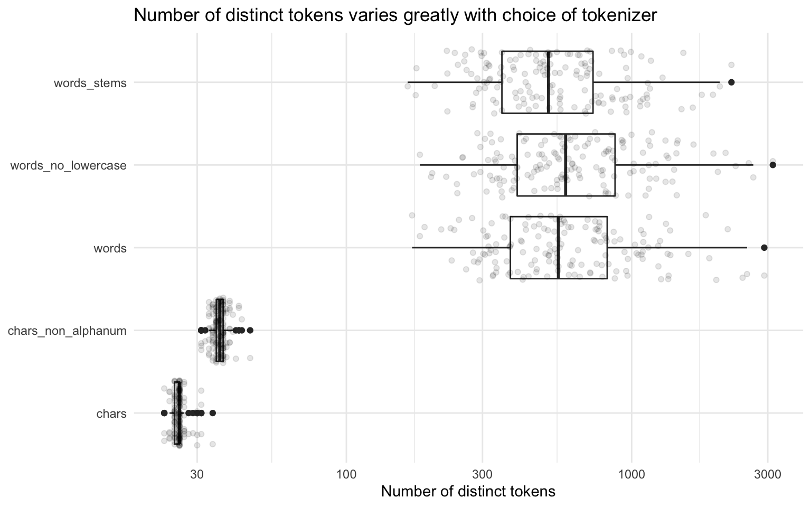

2 Tokenization
In this chapter we will focus on the concepts of tokens, n-grams, tokenization, and how to perform tokenization in R.
2.1 What is a token?
In R, text is typically represented with the character data type, similar to strings in other languages. Let’s explore some text from fairy tales by Hans Christian Andersen, available in the hcandersenr package (Hvitfeldt 2019a). If we look at the first paragraph of one story titled “The Fir Tree”, we find the text of the story is in a character vector: a series of letters, spaces, and punctuation stored as a vector.
library(tokenizers)
library(tidyverse)
library(tidytext)
library(hcandersenr)
the_fir_tree <- hcandersen_en %>%
filter(book == "The fir tree") %>%
pull(text)
head(the_fir_tree, 9)## [1] "Far down in the forest, where the warm sun and the fresh air made a sweet"
## [2] "resting-place, grew a pretty little fir-tree; and yet it was not happy, it"
## [3] "wished so much to be tall like its companions– the pines and firs which grew"
## [4] "around it. The sun shone, and the soft air fluttered its leaves, and the"
## [5] "little peasant children passed by, prattling merrily, but the fir-tree heeded"
## [6] "them not. Sometimes the children would bring a large basket of raspberries or"
## [7] "strawberries, wreathed on a straw, and seat themselves near the fir-tree, and"
## [8] "say, \"Is it not a pretty little tree?\" which made it feel more unhappy than"
## [9] "before."This character vector has nine atomic elements, each of which consists of a series of character symbols. These elements don’t contain any metadata or information to tell us which characters are words and which aren’t. Identifying these kinds of boundaries is where the process of tokenization comes in.
In tokenization, we take an input (a string) and a token type (a meaningful unit of text, such as a word) and split the input in to pieces (tokens) that correspond to the type. (Manning, Raghavan, and Schütze 2008)
 TODO
Most commonly, the meaningful unit or type of token that we want to split text into units of is a word. However, it is difficult to clearly define what a word is, for many or even most languages. Many languages, such as Chinese, do not use white space between words at all. Even languages that do use white space, including English, often have particular examples that are ambiguous (Bender 2013). Romance languages like Italian and French use pronouns and negation words that may better be considered prefixes with a space, and English contractions like "didn't" may more accurately be considered two words with no space.
To understand the process of tokenization, let’s start by defining a word as any selection of alphanumeric (letters and numbers) symbols. Let’s use some regular expressions (or regex for short, see Appendix 12) with strsplit() to split the first two lines of “The Fir Tree” by any characters that are not alphanumeric.
strsplit(the_fir_tree[1:2], "[^a-zA-Z0-9]+")## [[1]]
## [1] "Far" "down" "in" "the" "forest" "where" "the" "warm"
## [9] "sun" "and" "the" "fresh" "air" "made" "a" "sweet"
##
## [[2]]
## [1] "resting" "place" "grew" "a" "pretty" "little" "fir"
## [8] "tree" "and" "yet" "it" "was" "not" "happy"
## [15] "it"At first sight, this result looks pretty decent. However, we have lost all punctuation, which may or may not be favorable, and the hero of this story ("fir-tree") was split in half. Already it is clear that tokenization is going to be quite complicated. Luckily a lot of work has been invested in this process, and we will use these existing tools. For example, the tokenizers package (Mullen et al. 2018) contains a wealth of fast, consistent tokenizers we can use.
library(tokenizers)
tokenize_words(the_fir_tree[1:2])## [[1]]
## [1] "far" "down" "in" "the" "forest" "where" "the" "warm"
## [9] "sun" "and" "the" "fresh" "air" "made" "a" "sweet"
##
## [[2]]
## [1] "resting" "place" "grew" "a" "pretty" "little" "fir"
## [8] "tree" "and" "yet" "it" "was" "not" "happy"
## [15] "it"We see sensible single-word results here; the tokenize_words() function uses the stringi package (Gagolewski 2019) under the hood, making it very fast. Word-level tokenization is done by finding word boundaries according to the specification from the International Components for Unicode (ICU). How does the word boundary algorithm (“Unicode Text Segmentation,” n.d.) work?
- Break at the start and end of text, unless the text is empty.
- Do not break within CRLF (new line characters).
- Otherwise, break before and after new lines (including CR and LF).
- Do not break within emoji zwj sequences.
- Keep horizontal whitespace together.
- Ignore Format and Extend characters, except after sot, CR, LF, and new line.
- Do not break between most letters.
- Do not break letters across certain punctuation.
- Do not break within sequences of digits, or digits adjacent to letters (“3a”, or “A3”).
- Do not break within sequences, such as “3.2” or “3,456.789”.
- Do not break between Katakana.
- Do not break from extenders.
- Do not break within emoji flag sequences.
- Otherwise, break everywhere (including around ideographs).
While we might not understand what each and every step in this algorithm is doing, we can appreciate that it is many times more sophisticated than our initial approach of splitting on non-alphanumeric characters. In the rest of this book, we will use the tokenizers package as a baseline tokenizer for reference. Your choice of tokenizer will have an influence on your results, so don’t be afraid to experiment with different tokenizers or to write your own to fit your problem.
2.2 Types of tokens
Thinking of a token as a word is a useful way to start understanding tokenization, even if it is hard to implement concretely in software. We can generalize the idea of a token beyond only a single word to other units of text. We can tokenize text at a variety of units including:
- characters,
- words,
- sentences,
- lines,
- paragraphs, and
- n-grams.
In the following sections, we will explore how to tokenize text using the tokenizers package. These functions take a character vector as the input and return lists of character vectors as output. This same tokenization can also be done using the tidytext (Silge and Robinson 2016) package, for workflows using tidy data principles.
sample_vector <- c(
"This is the first of two strings",
"And here is the second string."
)
sample_tibble <- tibble(text = sample_vector)The tokenization achieved by using tokenize_words() on sample_vector:
tokenize_words(sample_vector)## [[1]]
## [1] "this" "is" "the" "first" "of" "two" "strings"
##
## [[2]]
## [1] "and" "here" "is" "the" "second" "string"will yield the same results as using unnest_tokens() on sample_tibble; the only difference is the data structure, and thus how we might use the result moving forward in our analysis.
sample_tibble %>%
unnest_tokens(word, text, token = "words")## # A tibble: 13 x 1
## word
## <chr>
## 1 this
## 2 is
## 3 the
## 4 first
## 5 of
## 6 two
## 7 strings
## 8 and
## 9 here
## 10 is
## 11 the
## 12 second
## 13 stringArguments used in tokenize_words() can be passed through unnest_tokens() using the “the dots”, ....
sample_tibble %>%
unnest_tokens(word, text, token = "words", strip_punct = FALSE)## # A tibble: 14 x 1
## word
## <chr>
## 1 this
## 2 is
## 3 the
## 4 first
## 5 of
## 6 two
## 7 strings
## 8 and
## 9 here
## 10 is
## 11 the
## 12 second
## 13 string
## 14 .2.2.1 Character tokens
Perhaps the simplest tokenization is character tokenization, which splits texts into characters. Let’s use tokenize_characters() with its default parameters; this function has arguments to convert to lowercase and to strip all non-alphanumeric characters. These defaults will reduce the number of different tokens that are returned. The tokenize_*() functions by default return a list of character vectors, one character vector for each string in the input.
tft_token_characters <- tokenize_characters(
x = the_fir_tree,
lowercase = TRUE,
strip_non_alphanum = TRUE,
simplify = FALSE
)What do we see if we take a look?
head(tft_token_characters) %>%
glimpse()## List of 6
## $ : chr [1:57] "f" "a" "r" "d" ...
## $ : chr [1:57] "r" "e" "s" "t" ...
## $ : chr [1:61] "w" "i" "s" "h" ...
## $ : chr [1:56] "a" "r" "o" "u" ...
## $ : chr [1:64] "l" "i" "t" "t" ...
## $ : chr [1:64] "t" "h" "e" "m" ...We don’t have to stick with the defaults. We can keep the punctuation and spaces by setting strip_non_alphanum = FALSE and now we see that spaces and punctuation are included in the results too.
tokenize_characters(
x = the_fir_tree,
strip_non_alphanum = FALSE
) %>%
head() %>%
glimpse()## List of 6
## $ : chr [1:73] "f" "a" "r" " " ...
## $ : chr [1:74] "r" "e" "s" "t" ...
## $ : chr [1:76] "w" "i" "s" "h" ...
## $ : chr [1:72] "a" "r" "o" "u" ...
## $ : chr [1:77] "l" "i" "t" "t" ...
## $ : chr [1:77] "t" "h" "e" "m" ...TODO Find examples of when a character is hard to define. Look at Arabic, German (double s) and danish (double a).
2.2.2 Word tokens
Tokenizing at the word level is perhaps the most common and widely used tokenization. We started our discussion of this topic with this kind of tokenization, and like we described before, this is the procedure of splitting text into words. To do this, let’s use the tokenize_words() function.
tft_token_words <- tokenize_words(
x = the_fir_tree,
lowercase = TRUE,
stopwords = NULL,
strip_punct = TRUE,
strip_numeric = FALSE
)The results show us the input text split into individual words.
head(tft_token_words) %>%
glimpse()## List of 6
## $ : chr [1:16] "far" "down" "in" "the" ...
## $ : chr [1:15] "resting" "place" "grew" "a" ...
## $ : chr [1:15] "wished" "so" "much" "to" ...
## $ : chr [1:14] "around" "it" "the" "sun" ...
## $ : chr [1:12] "little" "peasant" "children" "passed" ...
## $ : chr [1:13] "them" "not" "sometimes" "the" ...We have already seen lowercase = TRUE, and strip_punct = TRUE and strip_numeric = FALSE control whether we remove punctuation and numeric characters respectively. We also have stopwords = NULL, which we will talk about in more depth in Chapter 3.
Let’s create a tibble with two fairy tales, “The Fir Tree” and “The Little Mermaid”. Then we can use use unnest_tokens() together with some dplyr verbs to find the most commonly used words in each.
hcandersen_en %>%
filter(book %in% c("The fir tree", "The little mermaid")) %>%
unnest_tokens(word, text) %>%
count(book, word) %>%
group_by(book) %>%
arrange(desc(n)) %>%
slice(1:5)## # A tibble: 10 x 3
## # Groups: book [2]
## book word n
## <chr> <chr> <int>
## 1 The fir tree the 278
## 2 The fir tree and 161
## 3 The fir tree tree 76
## 4 The fir tree it 66
## 5 The fir tree a 56
## 6 The little mermaid the 817
## 7 The little mermaid and 398
## 8 The little mermaid of 252
## 9 The little mermaid she 240
## 10 The little mermaid to 199The five most common words in each fairy tale are fairly uninformative, with the exception being "tree" in the “The Fir Tree”.
These uninformative words are called stop words and will be explored in depth in Chapter 3.
2.2.3 Lines, sentence, and paragraph tokens
Tokenizers to split text into larger units of text like lines, sentences, and paragraphs are rarely used directly for modeling purposes, as the tokens produced tend to be fairly unique. It is very uncommon for multiple sentences in a text to be identical! However, these tokenizers are useful for preprocessing and labeling.
For example, Jane Austen’s novel Emma (as available in the janeaustenr package) is already preprocessed with each line being at most 80 characters long. However, it might be useful to split the data into chapters and paragraphs instead.
Let’s create a function that takes a dataframe containing a variable called text and turns it into a dataframe where the the text is transformed to paragraphs. First, we can collapse the text into one long string using collapse = "\n" to denote line breaks, and then next we can use tokenize_paragraphs() to identify the paragraphs and put them back into a dataframe. We can add a paragraph count with row_number().
add_paragraphs <- function(data) {
pull(data, text) %>%
paste(collapse = "\n") %>%
tokenize_paragraphs() %>%
unlist() %>%
tibble(text = .) %>%
mutate(paragraph = row_number())
}Now we take the raw text data and add the chapter count by detecting when the characters "CHAPTER" appear at the beginning of a line. Then we nest() the text column, apply our add_paragraphs() function, and then unnest() again.
library(janeaustenr)
emma_paragraphed <- tibble(text = emma) %>%
mutate(chapter = cumsum(str_detect(text, "^CHAPTER "))) %>%
filter(
chapter > 0,
!str_detect(text, "^CHAPTER ")
) %>%
nest(data = text) %>%
mutate(data = map(data, add_paragraphs)) %>%
unnest(cols = c(data))
glimpse(emma_paragraphed)## Observations: 2,372
## Variables: 3
## $ chapter <int> 1, 1, 1, 1, 1, 1, 1, 1, 1, 1, 1, 1, 1, 1, 1, 1, 1, 1, 1, 1,…
## $ text <chr> "Emma Woodhouse, handsome, clever, and rich, with a comfort…
## $ paragraph <int> 1, 2, 3, 4, 5, 6, 7, 8, 9, 10, 11, 12, 13, 14, 15, 16, 17, …Now we have 2372 separate paragraphs we can analyse. Similarly, we could go a step further to split these chapters into sentences, lines, or words.
2.2.4 Tokenizing by n-grams
An n-gram (sometimes written “ngram”) is a term in linguistics for a contiguous sequence of \(n\) items from a given sequence of text or speech. The item can be phonemes, syllables, letters, or words depending on the application, but when most people talk about n-grams, they mean a group of \(n\) words. In this book, we will use n-gram to denote word n-grams unless otherwise stated. We use Latin prefixes, such that a 1-gram is called a unigram, 2-gram is called a bigram, 3-gram called a trigram and so on.
We use Latin prefixes, so that a 1-gram is called a unigram, a 2-gram is called a bigram, a 3-gram called a trigram, and so on.
Some example n-grams are:
- unigram: “Hello”, “day”, “my”, “little”
- bigram: “White House”, “happy dog”, “to be”, “Robin Hood”
- trigram: “You and I”, “please let go”, “no time like”, “great strong soldier”
The benefit of using n-grams compared to words is that we can capture word order which would otherwise be lost. Similarly, when we use character n-grams, we can model the beginning and end of words, because a space will be located at the end of an n-gram for the end of a word and at the beginning of an n-gram of the beginning of a word.
To split text into word n-grams, we can use the the function tokenize_ngrams(). It has a few more arguments, so let’s go over them one by one.
tft_token_ngram <- tokenize_ngrams(
x = the_fir_tree,
lowercase = TRUE,
n = 3L,
n_min = 3L,
stopwords = character(),
ngram_delim = " ",
simplify = FALSE
)We have seen the arguments lowercase, stopwords, and simplify before; they work the same as for the other tokenizers. We also have n, the argument to determine which degree of n-gram to return. Using n = 1 returns unigrams, n = 2 bigrams, n = 3 gives trigrams, and so on. Related to n is the n_min argument, which specifies the minimum number of n-grams to include. By default both n and n_min are set to 3 making tokenize_ngrams() return only trigrams. By setting n = 3 and n_min = 1, we will get all unigrams, bigrams, and trigrams of a text. Lastly, we have the ngram_delim argument, which specifies the separator between words in the n-grams; notice that this defaults to a space.
Let’s look at the result of n-gram tokenization for the first line of “The Fir Tree”.
tft_token_ngram[[1]]## [1] "far down in" "down in the" "in the forest" "the forest where"
## [5] "forest where the" "where the warm" "the warm sun" "warm sun and"
## [9] "sun and the" "and the fresh" "the fresh air" "fresh air made"
## [13] "air made a" "made a sweet"Notice how the words in the trigrams overlap so that the word “down” appears in the middle of the first trigram and beginning of the second trigram. N-gram tokenization slides along the text to create overlapping sets of tokens.
It is important to choose the right value for n when using n-grams for the question we want to answer. Using unigrams is faster and more efficient, but we don’t capture information about word order. Using a higher value for n keeps more information, but the vector space of tokens increases dramatically, corresponding to a reduction in token counts. A sensible starting point in most cases is three. However, if you don’t have a large vocabulary in your dataset, consider starting at two instead three and experimenting from there. Figure 2.1 demonstrates how token frequency starts to decrease dramatically for trigrams and higher order n-grams.
length_and_max <- function(x) {
tab <- table(x)
paste(length(tab), max(tab), sep = "-")
}
plotting_data <- hcandersen_en %>%
nest(data = c(text)) %>%
mutate(data = map_chr(data, ~ paste(.x$text, collapse = " "))) %>%
mutate(
unigram = tokenize_ngrams(data, n = 1, n_min = 1) %>% map_chr(length_and_max),
bigram = tokenize_ngrams(data, n = 2, n_min = 2) %>% map_chr(length_and_max),
trigram = tokenize_ngrams(data, n = 3, n_min = 3) %>% map_chr(length_and_max),
quadrugram = tokenize_ngrams(data, n = 4, n_min = 4) %>% map_chr(length_and_max)
) %>%
select(unigram, bigram, trigram, quadrugram) %>%
pivot_longer(cols = unigram:quadrugram, names_to = "ngrams") %>%
separate(value, c("length", "max"), convert = TRUE) %>%
mutate(ngrams = factor(ngrams, levels = c("quadrugram", "trigram", "bigram", "unigram")))
plotting_data %>%
ggplot(aes(length, ngrams, color = max)) +
geom_jitter(width = 0, alpha = 0.8, height = 0.35) +
scale_color_viridis_c(trans = "log", labels = scales::comma) +
labs(
x = "Number of unique n-grams",
y = NULL,
color = "Count of\nmost frequent\nngram",
title = "Unique n-grams by n-gram order",
subtitle = "Each point represents a H.C. Andersen Fairy tale"
)Figure 2.1: Using longer n-grams results in a higher number of unique tokens with fewer counts
2.3 Where does tokenization break down?
Tokenization will generally be one of first steps we take with the text data when building a model, so it is important to consider carefully what happens in this step of data preprocessing. As with most software there is a trade-off between speed and customizability, as demonstrated in section 2.5. The fastest tokenization methods give us little control over how it is done.
While the defaults work well in many cases, we encounter situations where we want to impose stricter rules to get better tokenized results. Consider the following sentence.
“Don’t forget you owe the bank $1 million for the house.”
This sentence has several interesting parts which we need to decide whether to keep or to ignore when tokenizing. The first issue is the contraction in "Don't" which presents us with several possible options. The fastest option is to keep this as one word, but it could also be split up into "do" and "n't". By performing such a split, we could learn whether contractions such as "n't" will be different then "not", but we will also have a broader reduction as the words “wouldn’t” and “shouldn’t” will be split according to the same pattern.
TODO FOR EMIL: THE LAST SENTENCE OF THE ABOVE PARAGRAPH IS UNCLEAR AND I CAN’T TELL WHAT IT IS INTENDING TO SAY
The next issue at hand is how to deal with "\$1"; the dollar sign is highly important part of this sentence as it denotes a kind of currency. We could either remove or keep this punctuation symbol, and if we keep the dollar sign, we can choose between keeping one or two tokens, "\$1" or "\$" and "1". If we look at the default for tokenize_words(), we notice that it defaults to removing most punctuation including $.
tokenize_words("$1")## [[1]]
## [1] "1"We can keep the dollar sign if we don’t strip punctuation.
tokenize_words("$1", strip_punct = FALSE)## [[1]]
## [1] "$" "1"When dealing with this sentence, we also need to decide whether to keep the final period as a token or not. If we remove it, we will not be able to locate the last word in a sentence using n-grams.
Information we can lose when we tokenize occurs more frequently in online and more casual text. Multiple spaces, extreme usage of exclamation characters, and deliberate use of capitalization can be completely lost depending on our choice of tokenizer and tokenization parameters. At the same time, it is not always worth keeping that kind of information about how text is being used. If we are studying trends in disease epidemics using Twitter data, the style the tweets are written with is likely not nearly as important as what words are used. However, if we are trying to model social groupings, language style and how individuals use language toward each other becomes much more important.
TODO Do comparing of compression of data with different types of tokenizations
hcandersen_en %>%
nest(text) %>%
mutate(data = map_chr(data, ~ paste(.x$text, collapse = " "))) %>%
mutate(
chars = tokenize_characters(data) %>% map_int(~ table(.x) %>% length()),
chars_non_alphanum = tokenize_characters(data, strip_non_alphanum = FALSE) %>% map_int(~ table(.x) %>% length()),
words = tokenize_words(data) %>% map_int(~ table(.x) %>% length()),
words_no_lowercase = tokenize_words(data, lowercase = FALSE) %>% map_int(~ table(.x) %>% length()),
words_stems = tokenize_word_stems(data) %>% map_int(~ table(.x) %>% length())
) %>%
select(-data) %>%
pivot_longer(-book) %>%
ggplot(aes(name, value)) +
geom_boxplot() +
geom_jitter(alpha = 0.1) +
scale_y_log10() +
theme_minimal() +
coord_flip() +
labs(
title = "Number of distinct tokens varies greatly with choice of tokenizer",
x = NULL,
y = "Number of distinct tokens"
)
2.4 Building your own tokenizer
Sometimes the out-of-the-box tokenizers won’t be able to do what we need them to do. In this case, we will have to wield stringi/stringr and regular expressions (see Appendix 12).
There are two main approaches to tokenization.
- Split the string up according to some rule.
- Extract tokens based on some rule.
The number and complexity of our rules is determined by our desired outcome. We can reach complex outcomes by chaining together many smaller rules. In this section, we will implement a couple of specialty tokenizers to showcase these techniques.
2.4.1 Tokenize to characters, only keeping letters
Here we want to make a modification to what tokenize_characters() does such that we only keep keep letters. Upon first thought, there are 2 main options. We can use tokenize_characters() and remove anything that is not a letter, or we can extract the letters one by one. Let’s try the latter option. This is an extract task and we will be using str_extract_all() as each string has the possibility of including more then 1 token. Since we want to extract letters we can use the letters character class [:alpha:] to match letters and the quantifier {1} to only extract the first one.
In this example, leaving out the quantifier yields the same result as including it. However, for more complex regular expressions, specifying the quantifier allows the string handling to run faster.
letter_tokens <- str_extract_all(
"This sentence include 2 numbers and 1 period.",
"[:alpha:]{1}"
)
letter_tokens## [[1]]
## [1] "T" "h" "i" "s" "s" "e" "n" "t" "e" "n" "c" "e" "i" "n" "c" "l" "u" "d" "e"
## [20] "n" "u" "m" "b" "e" "r" "s" "a" "n" "d" "p" "e" "r" "i" "o" "d"We may be tempted to specify the character class as something like [a-zA-Z]{1}. This option would in fact run faster, but we would lose non-English letter characters. This is a design choice we have to make depending on the goals of our specific problem.
danish_sentence <- "Så mødte han en gammel heks på landevejen; hun var så ækel, hendes underlæbe hang hende lige ned på brystet."
str_extract_all(danish_sentence, "[:alpha:]")## [[1]]
## [1] "S" "å" "m" "ø" "d" "t" "e" "h" "a" "n" "e" "n" "g" "a" "m" "m" "e" "l" "h"
## [20] "e" "k" "s" "p" "å" "l" "a" "n" "d" "e" "v" "e" "j" "e" "n" "h" "u" "n" "v"
## [39] "a" "r" "s" "å" "æ" "k" "e" "l" "h" "e" "n" "d" "e" "s" "u" "n" "d" "e" "r"
## [58] "l" "æ" "b" "e" "h" "a" "n" "g" "h" "e" "n" "d" "e" "l" "i" "g" "e" "n" "e"
## [77] "d" "p" "å" "b" "r" "y" "s" "t" "e" "t"str_extract_all(danish_sentence, "[a-zA-Z]")## [[1]]
## [1] "S" "m" "d" "t" "e" "h" "a" "n" "e" "n" "g" "a" "m" "m" "e" "l" "h" "e" "k"
## [20] "s" "p" "l" "a" "n" "d" "e" "v" "e" "j" "e" "n" "h" "u" "n" "v" "a" "r" "s"
## [39] "k" "e" "l" "h" "e" "n" "d" "e" "s" "u" "n" "d" "e" "r" "l" "b" "e" "h" "a"
## [58] "n" "g" "h" "e" "n" "d" "e" "l" "i" "g" "e" "n" "e" "d" "p" "b" "r" "y" "s"
## [77] "t" "e" "t"
Choosing between [:alpha:] and [a-zA-Z] may seem quite similar, but the resulting differences can have a big impact on your analysis.
2.4.2 Allow for hyphenated words
In our examples so far, we have noticed that the string “fir-tree” is typically split into two tokens. Let’s explore two different approaches for how to handle this hyphenated word as one token. First, let’s split on white space; this is a decent way to identify words in English and some other languages, and it does not split hyphenated words as the hyphen character isn’t considered a white-space. Second, let’s find a regex to match words with a hyphen and extract those.
Splitting by white-space is not too difficult because we can use character classes, as show in Table 12.2. We will use the white space character class [:space:] to split our sentence.
str_split("This isn't a sentence with hyphenated-words.", "[:space:]")## [[1]]
## [1] "This" "isn't" "a"
## [4] "sentence" "with" "hyphenated-words."This worked pretty well. This version doesn’t drop punctuation, but we can achieve this by removing punctuation characters at the beginning and end of words.
str_split("This isn't a sentence with hyphenated-words.", "[:space:]") %>%
map(~ str_remove_all(.x, "^[:punct:]+|[:punct:]+$"))## [[1]]
## [1] "This" "isn't" "a" "sentence"
## [5] "with" "hyphenated-words"This regex used to remove the punctuation is a little complicated so let’s discuss it, piece by piece. The regex ^[:punct:]* will look at the beginning of the string (^) to match any punctuation characters ([:punct:]) where it will select one or more (+). The other regex [:punct:]+$ will look for punctuation characters ([:punct:]) that appear one or more times (+) at the end of the string ($). These will alternate (|) so that we get matches from both sides of the words. The reason we use the quantifier + is because there are cases where a word is followed by multiple characters we don’t want, such as "okay..." and "Really?!!!". We are using map() since str_split() returns a list, and we want str_remove_all() to be applied to each element in the list. (The example here only has one element.)
If you are in a situation where you want to avoid the dependencies that come with purrr, you can use lapply() instead.
lapply(str_remove_all, pattern = “^[:punct:]+|[:punct:]+$”)
Now let’s see if we can get the same result using extraction. We will start by constructing a regular expression that will capture hyphenated words; our definition here is a word with one hyphen located inside it. Since we want the hyphen to be inside the word, we will need to have a non-zero number of characters on either side of the hyphen.
str_extract_all("This isn't a sentence with hyphenated-words.", "[:alpha:]+-[:alpha:]+")## [[1]]
## [1] "hyphenated-words"Wait, this only matched the hyphenated word! This happened because we are only matching words with hyphens. If we add the quantifier ? then we can match 0 or 1 occurrences.
str_extract_all("This isn't a sentence with hyphenated-words.", "[:alpha:]+-?[:alpha:]+")## [[1]]
## [1] "This" "isn" "sentence" "with"
## [5] "hyphenated-words"Now we are getting more words, but the ending of "isn't" isn’t there anymore and we lost the word "a". We can get matches for the whole contraction by expanding the character class [:alpha:] to include the character '. We do that by using [[:alpha:]'].
str_extract_all("This isn't a sentence with hyphenated-words.", "[[:alpha:]']+-?[[:alpha:]']+")## [[1]]
## [1] "This" "isn't" "sentence" "with"
## [5] "hyphenated-words"Next we need to find out why "a" wasn’t matched. If we look at the regular expression, we remember that we imposed the restriction that a non-zero number of characters needed to surround the hyphen to avoid matching words that start or end with a hyphen. This means that the smallest possible pattern matched is 2 characters long. We can fix this by using an alternation with |. We will keep our previous match on the left-hand side, and include [:alpha:]{1} on the right-hand side to match the single length words that won’t be picked up by the left-hand side. Notice how we aren’t using [[:alpha:]'] since we are not interested in matching single ' characters.
str_extract_all("This isn't a sentence with hyphenated-words.", "[[:alpha:]']+-?[[:alpha:]']+|[:alpha:]{1}")## [[1]]
## [1] "This" "isn't" "a" "sentence"
## [5] "with" "hyphenated-words"That is getting to be quite a complex regex, but we are now getting the same answer as before.
2.4.3 Character n-grams
TODO change to toktok tokenizer
Next let’s explore character n-grams. For the purpose of this example, a character n-gram is defined as a consecutive group of \(n\) characters. The matching will not extend over spaces, but will include overlapping matches within words. With this definiton, the 3-grams of "nice dog" would be "nic", "ice", "dog". Since the regex engines in R normally don’t support overlapping matches, we have to get creative. First we will use a “lookahead” to find the location of all the matches, then we will use those locations to match the n-grams.
sentence <- c(
"This isn't a sentence with hyphenated-words.",
"Same with this one"
)
ngram_loc <- str_locate_all(sentence, "(?=(\\w{3}))")
map2(ngram_loc, sentence, ~ str_sub(.y, .x[, 1], .x[, 1] + 2))## [[1]]
## [1] "Thi" "his" "isn" "sen" "ent" "nte" "ten" "enc" "nce" "wit" "ith" "hyp"
## [13] "yph" "phe" "hen" "ena" "nat" "ate" "ted" "wor" "ord" "rds"
##
## [[2]]
## [1] "Sam" "ame" "wit" "ith" "thi" "his" "one"2.4.4 Wrapping it into a function
We have shown how we can use regular expressions to extract the tokens we want, perhaps to use in modeling. So far, the code has been rather unstructured. We would ideally wrap these tasks into functions that can be used the same way tokenize_words() is used.
Let’s start with the example with hyphenated words. To make the function a little more flexible, let’s add an option to transform all the output to lowercase.
tokenize_hyphenated_words <- function(x, lowercase = TRUE) {
if (lowercase) {
x <- str_to_lower(x)
}
str_split(x, "[:space:]") %>%
map(~ str_remove_all(.x, "^[:punct:]+|[:punct:]+$"))
}
tokenize_hyphenated_words(the_fir_tree[1:3])## [[1]]
## [1] "far" "down" "in" "the" "forest" "where" "the" "warm"
## [9] "sun" "and" "the" "fresh" "air" "made" "a" "sweet"
##
## [[2]]
## [1] "resting-place" "grew" "a" "pretty"
## [5] "little" "fir-tree" "and" "yet"
## [9] "it" "was" "not" "happy"
## [13] "it"
##
## [[3]]
## [1] "wished" "so" "much" "to" "be"
## [6] "tall" "like" "its" "companions" "the"
## [11] "pines" "and" "firs" "which" "grew"Notice how we transformed to lowercase first because the rest of the operations are case insensitive.
Next let’s turn our character n-gram tokenizer into a function, with a variable n argument.
tokenize_character_ngram <- function(x, n) {
ngram_loc <- str_locate_all(x, paste0("(?=(\\w{", n, "}))"))
map2(ngram_loc, x, ~ str_sub(.y, .x[, 1], .x[, 1] + n - 1))
}
tokenize_character_ngram(the_fir_tree[1:3], n = 3)## [[1]]
## [1] "Far" "dow" "own" "the" "for" "ore" "res" "est" "whe" "her" "ere" "the"
## [13] "war" "arm" "sun" "and" "the" "fre" "res" "esh" "air" "mad" "ade" "swe"
## [25] "wee" "eet"
##
## [[2]]
## [1] "res" "est" "sti" "tin" "ing" "pla" "lac" "ace" "gre" "rew" "pre" "ret"
## [13] "ett" "tty" "lit" "itt" "ttl" "tle" "fir" "tre" "ree" "and" "yet" "was"
## [25] "not" "hap" "app" "ppy"
##
## [[3]]
## [1] "wis" "ish" "she" "hed" "muc" "uch" "tal" "all" "lik" "ike" "its" "com"
## [13] "omp" "mpa" "pan" "ani" "nio" "ion" "ons" "the" "pin" "ine" "nes" "and"
## [25] "fir" "irs" "whi" "hic" "ich" "gre" "rew"We can use paste0() in this function to construct an actual regex.
2.5 Tokenization benchmark
TODO showcase other libraries for tokenization
the_fir_tree1 <- c("1", the_fir_tree)
bench::mark(
`[:alpha:]` = str_extract_all(the_fir_tree1, "[:alpha:]"),
`[a-zA-Z]` = str_extract_all(the_fir_tree1, "[a-zA-Z]"),
`[a-zA-Z]{1}` = str_extract_all(the_fir_tree1, "[a-zA-Z]{1}"),
`[:Letter:]` = str_extract_all(the_fir_tree1, "[:Letter:]")
)## # A tibble: 4 x 6
## expression min median `itr/sec` mem_alloc `gc/sec`
## <bch:expr> <bch:tm> <bch:tm> <dbl> <bch:byt> <dbl>
## 1 [:alpha:] 2.26ms 2.44ms 411. 117KB 0
## 2 [a-zA-Z] 1.35ms 1.53ms 653. 117KB 2.15
## 3 [a-zA-Z]{1} 1.56ms 1.58ms 627. 117KB 0
## 4 [:Letter:] 2.11ms 2.26ms 447. 117KB 2.162.6 Summary
To build a predictive model, text data needs to be broken down into meaningful units, called tokens. These tokens range from individual characters to words to n-grams and even more complex structures, and the particular procedures of identifying tokens from text can be important. Fast and consistent tokenizers are available, but understanding how they behave and in what cirstumstances they work best will set you up for success. It’s also possible to build custom tokenizers when necessary. Once text data is tokenized, a common next preprocessing step is to consider how to handle very common words that are not very informative, stop words. Chapter 3 examines this in detail.
References
Bender, Emily M. 2013. “Linguistic Fundamentals for Natural Language Processing: 100 Essentials from Morphology and Syntax.” Synthesis Lectures on Human Language Technologies 6 (3). Morgan & Claypool Publishers: 1–184.
Gagolewski, Marek. 2019. R Package Stringi: Character String Processing Facilities. http://www.gagolewski.com/software/stringi/.
Hvitfeldt, Emil. 2019a. Hcandersenr: H.C. Andersens Fairy Tales. https://CRAN.R-project.org/package=hcandersenr.
Manning, Christopher D., Prabhakar Raghavan, and Hinrich Schütze. 2008. Introduction to Information Retrieval. New York, NY, USA: Cambridge University Press.
Mullen, Lincoln A., Kenneth Benoit, Os Keyes, Dmitry Selivanov, and Jeffrey Arnold. 2018. “Fast, Consistent Tokenization of Natural Language Text.” Journal of Open Source Software 3 (23): 655. doi:10.21105/joss.00655.
Silge, Julia, and David Robinson. 2016. “Tidytext: Text Mining and Analysis Using Tidy Data Principles in R.” JOSS 1 (3). The Open Journal. doi:10.21105/joss.00037.